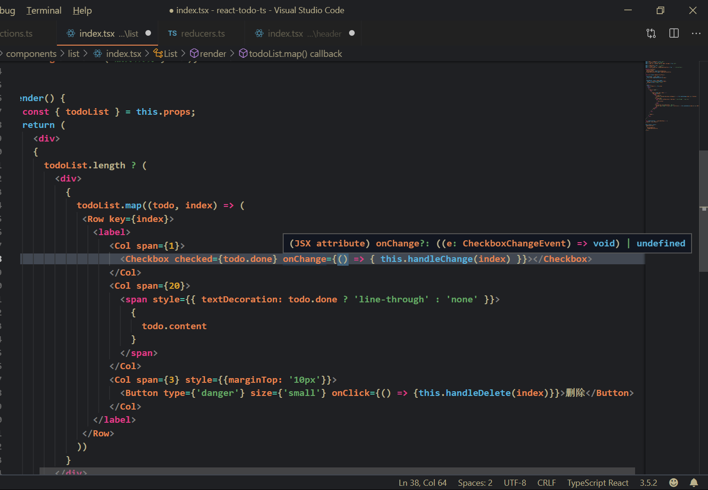

原文连接:https://www.cnblogs.com/zhangzhengsmiling/p/react-todo-typescript.html
0. Typescript
Typescript对于前端来说可以说是越来越重要了，前端的很多项目都用Typescript进行了重构。这主要得益于Typescript有比较好的类型支持，在编码的过程中可以很好地做一些类型推断（主要是编辑器会有代码提示，就很舒服）。再者Typescript的语法相较于javascript更加严谨，有更好的ES6的支持，这些特性使得使用ts编码更加高效，尽量避免javascript中容易造成模糊的坑点。 我最近也正在学Typescript的一些知识，无奈本人实习所在的公司貌似暂时还不打算使用typescript，无奈只好自己琢磨，尝试将typescript与react进行整合，花了挺长时间的，关键在于typescript中需要对变量进行约束。
1. react的typescript版本项目初始化
这个没有好说的，使用react脚手架就可以初始化react项目，默认情况下安装的是javascript版本的项目，在脚手架命令中加上typescript的配置参数，就可以初始化typescript版本的react项目啦。
create-react-app react-todo-ts --typescript2. react-todo-ts
本次主要通过一个简单的Todo应用，对于在React中整合typescript的流程有一个简单的认识。我采用的目录结构比较简单（ps：按照常理，一个简单的Todo应用其实没有必要整的这么复杂，也没有必要使用redux增加项目的复杂度，不过此处只是做一个演示，而在redux中也是需要使用typescript的类型声明的，否则可能无法通过编译）’
目录结构如下：
做个简单的说明：
-
components中主要存放组件
-
store中包含了一些redux相关的代码
-
types只用存放公用的类型定义以及接口
-
index.tsx是项目默认的入口文件
package.json文件的说明：
其中有几个声明文件是不需要的：@types/antd，@types/redux-thunk这两个声明文件是不需要的，它们的类型声明文件在antd和redux-thunk库中已经存在。（另外，本来想使用redux-thunk模拟一下异步请求的，但在整合的过程中稍微还有点问题，因此此版本并没有异步action的整合）。
{
"name": "react-todo-ts",
"version": "0.1.0",
"private": true,
"dependencies": {
"@types/antd": "^1.0.0",
"@types/jest": "24.0.17",
"@types/node": "12.7.2",
"@types/react": "16.9.2",
"@types/react-dom": "16.8.5",
"@types/react-redux": "^7.1.2",
"@types/redux-thunk": "^2.1.0",
"antd": "^3.21.4",
"babel-plugin-import": "^1.12.0",
"react": "^16.9.0",
"react-dom": "^16.9.0",
"react-redux": "^7.1.0",
"react-scripts": "3.1.1",
"redux": "^4.0.4",
"redux-thunk": "^2.3.0",
"typescript": "3.5.3"
},
"scripts": {
"start": "react-scripts start",
"build": "react-scripts build",
"test": "react-scripts test",
"eject": "react-scripts eject"
},
"eslintConfig": {
"extends": "react-app"
},
"browserslist": {
"production": [
">0.2%",
"not dead",
"not op_mini all"
],
"development": [
"last 1 chrome version",
"last 1 firefox version",
"last 1 safari version"
]
}
}
组件拆分说明：

3.typescript与antd整合
此处选取Header组件的代码做说明
-
Component类的变化
首先，变化的是Component类，我们可以通过泛型的方式约束组件的state和props的类型
interface IHeaderProps {
todoList:ITodo[];
addTodoAction: typeof addTodoAction
}
interface IHeaderState {
todoText:string;
}
class Header extends Component<IHeaderProps, IHeaderState> {
state = {
todoText: ''
}
...
...
render() {
return (
<Row>
<Col span={16}>
<Input placeholder="please input todo：" value={this.state.todoText} onChange={(e) => this.handleChange(e)} onKeyDown={(e) => this.handleKeyDown(e)}></Input>
</Col>
<Col span={8}>
<Button disabled={this.state.todoText.trim() === ''} type={'primary'} style={{ marginLeft: '50%', transform: 'translateX(-50%)' }} onClick={() => this.handleAdd()}>添加</Button>
</Col>
</Row>
)
}
}
此处通过Component<IHeaderProps, IHeaderState>约束Header组件中的props和state属性，这样做以后，Header中的props属性必须满足IHeaderProps接口，state必须满足IHeaderState接口
-
事件交互部分代码的变化
handleChange = (e:ChangeEvent<HTMLInputElement>) => { const { value } = e.currentTarget; this.setState({ todoText: value }); } handleAdd = () => { const { todoText } = this.state; if(todoText.trim() === '') { return; } this.props.addTodoAction({ content: todoText, done: false }); this.setState({ todoText: '' }) } handleKeyDown = (e:KeyboardEvent<HTMLInputElement>) => { if(e.keyCode === 13) { console.log(e.keyCode); this.handleAdd(); } } render() { return ( <Row> <Col span={16}> <Input placeholder="please input todo：" value={this.state.todoText} onChange={(e) => this.handleChange(e)} onKeyDown={(e) => this.handleKeyDown(e)}></Input> </Col> <Col span={8}> <Button disabled={this.state.todoText.trim() === ''} type={'primary'} style={{ marginLeft: '50%', transform: 'translateX(-50%)' }} onClick={() => this.handleAdd()}>添加</Button> </Col> </Row> ) }在ts中我们定义一个函数时必须要指定函数参数的类型，当我们在定义handler函数时，需要用到event对象时，我们又该如何声明event对象的类型呢？
最开始的时候，我一般为了避免报错，不管三七二十一就是一个any声明，但这样其实就失去了类型推断的意义。
在本项目中react的事件类型分为两类：
-
antd组件上的事件类型
antd组件中的事件类型一般在antd的库中都会定义，但是有些组件与原生的事件定义类型一致
-
原生组件上的事件类型
原生组件的事件类型一般定义在@types/react库中,可以从react库中引入事件类型，一般原生事件类型的命名方式是通过（事件名称<元素类型>）的方式来声明的

-
在vscode下，当你不确定事件类型的时候，hover上去会有函数签名提示，就可以比较方便地确定事件类型了

4. typescript与redux整合
主要针对todoList的操作进行
-
对于todo的结构定义一个接口
export interface ITodo { content:String; done:boolean; } -
确定对todoList的操作（添加todo，删除todo，修改完成状态），然后定义相关的action
import { ADD_TODO, DELETE_TODO, CHANGE_TODO_STATUS } from './action-types'; import { ITodo } from '../types'; export const addTodoAction = (todo:ITodo):AddTodoAction => ({ type: ADD_TODO, todo }); export const deleteTodoAction = (index:number):DeleteTodoAction => ({ type: DELETE_TODO, index }); export const changeTodoStatusAction = (index:number):ChangeTodoStatusAction => ({ type: CHANGE_TODO_STATUS, index }); export type AddTodoAction = { type: typeof ADD_TODO, todo: ITodo; } export type DeleteTodoAction = { type: typeof DELETE_TODO, index:number; } export type ChangeTodoStatusAction = { type: typeof CHANGE_TODO_STATUS, index:number; }
-
定义todoReducer，传入todoReducer的action有三种可能，从actions.ts中将action的类型导入
import { ADD_TODO, DELETE_TODO, CHANGE_TODO_STATUS } from './action-types'; import { ITodo } from '../types'; import { AddTodoAction, DeleteTodoAction, ChangeTodoStatusAction } from './actions' const initTodoList:ITodo[] = []; export const todoReducer = (todos:ITodo[] = initTodoList, action:AddTodoAction | DeleteTodoAction | ChangeTodoStatusAction) => { switch(action.type) { case ADD_TODO: // 由于action传入的类型有三种可能，没法准确判断action类型。但经过case判断以后，action的类型应当是确定的，因此在此处我使用了类型断言的方式，将action断言为AddTodoAction(下同) return [(action as AddTodoAction).todo, ...todos]; case DELETE_TODO: return todos.filter((todo, index) => index !== (action as DeleteTodoAction).index); case CHANGE_TODO_STATUS: const nextTodo:ITodo[] = [...todos]; let target:ITodo = nextTodo.find((todo, index) => index === (action as ChangeTodoStatusAction).index) as ITodo; target.done = !target.done; return nextTodo; default: return todos; } } -
store中暴露store工厂函数,获取store类型的时候可以通过ReturnType获取
import { todoReducer } from './reducers'; import { combineReducers, createStore, applyMiddleware} from 'redux'; import thunk from 'redux-thunk'; const rootReducer = combineReducers({ todoList: todoReducer }) export type RootState = ReturnType<typeof rootReducer> // 向外暴露store工厂 export function configStore() { return createStore( rootReducer, applyMiddleware(thunk) ); }
5. react-redux整合
通过react-redux分离依赖的方式与javascript版本没有太大的区别|
-
使用provider高阶组件包裹App组件
import React from 'react'; import ReactDom from 'react-dom'; import 'antd/dist/antd.css' import { Provider } from 'react-redux'; import App from './components/app'; import { configStore } from './store'; const store = configStore(); const Root = () => { return ( <Provider store={store}> <App/> </Provider> ) } ReactDom.render( ( <Root/> ), document.querySelector('#root') ); -
内部组件引入，主要的不同点在于引入时需要将RootState的类型一同引入，在定义mapStateToProps函数时需要定义参数的类型。
import React, { Component } from 'react'; import { connect } from 'react-redux'; import { Row, Col, Checkbox, Button, Empty, message } from 'antd'; import { RootState } from '../../store'; import { ITodo } from '../../types'; import { deleteTodoAction, changeTodoStatusAction } from '../../store/actions'; interface IListProp { todoList:ITodo[]; deleteTodoAction: typeof deleteTodoAction; changeTodoStatusAction:typeof changeTodoStatusAction; } class List extends Component<IListProp> { handleChange = (index:number) => { this.props.changeTodoStatusAction(index); } handleDelete = async (index:number) => { await this.props.deleteTodoAction(index); message.success("删除成功", 0.5); } render() { const { todoList } = this.props; return ( <div> { todoList.length ? ( <div> { todoList.map((todo, index) => ( <Row key={index}> <label> <Col span={1}> <Checkbox checked={todo.done} onChange={() => { this.handleChange(index) }}></Checkbox> </Col> <Col span={20}> <span style={{ textDecoration: todo.done ? 'line-through' : 'none' }}> { todo.content } </span> </Col> <Col span={3} style={{marginTop: '10px'}}> <Button type={'danger'} size={'small'} onClick={() => {this.handleDelete(index)}}>删除</Button> </Col> </label> </Row> )) } </div> ) : (<Empty/>) } </div> ) } } const mapStateToProps = (state:RootState) => ({ todoList: state.todoList, }) export default connect( mapStateToProps, { deleteTodoAction, changeTodoStatusAction } )(List);
6. 异步action